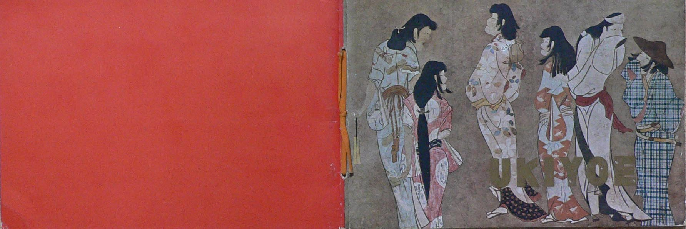
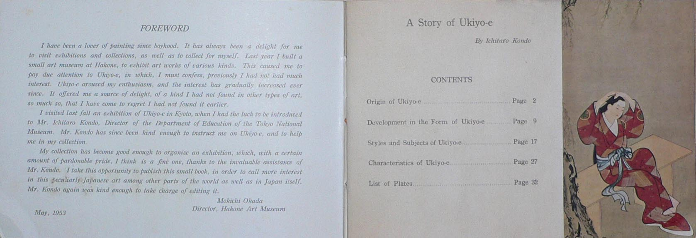
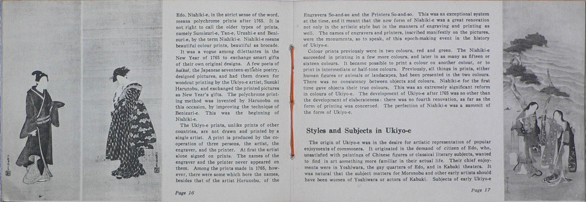

――― 岡 田 自 観 師 の 論 文 集 ――発行誌別
A Story of Ukiyo-e

A Story of Ukiyo-e 『浮世絵の栞』 英語版 Ａ６ 版 横 ３２P by Ichitaro Kondo Planned and Supervised by Hakone Art Museum Ohtsuka Kogeisya Company ・ Tokyo Price ￥ 150.―
A Story of Ukiyo-e 『浮世絵の栞』 英語版 Ａ６ 版 横 ３２P by Ichitaro Kondo Planned and Supervised by Hakone Art Museum Ohtsuka Kogeisya Company ・ Tokyo
Price ￥ 150.―

昭和２８年６月１日から箱根美術館別館において開催された「浮世絵展」に合わせて作られたパンフレットの英語版。 巻頭に明主様のはしがき。東京国立博物館の近藤市太郎氏の浮世絵の解説文を収録。
